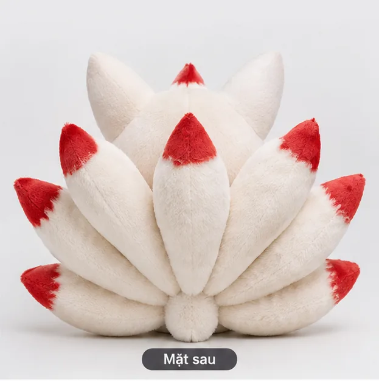

GẤU BÔNG · Naruto
Cửu Vĩ Kurama (Naruto)
350.000đ
Hồ ly chín đuôi Kurama bông, các đuôi có dây thép mềm để uốn tạo dáng.
Số lượng:
- ✦ Giao hàng toàn quốc
- ♡ Đổi trả trong 7 ngày nếu lỗi
- ⚡ Hỗ trợ tư vấn nhanh
📝 Mô tả chi tiết
Hồ ly chín đuôi Kurama bông, các đuôi có dây thép mềm để uốn tạo dáng.
- Chất liệu: Nhung + bông
- Kích thước: ≈ 45 cm
- Đặc điểm: 9 đuôi uốn được
*Thông tin và giá sản phẩm là nội dung mẫu cho giao diện demo. Vui lòng kiểm tra trước khi đặt hàng.